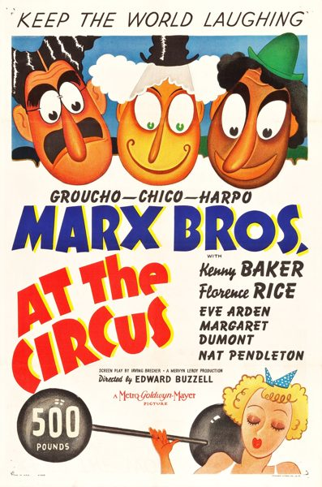

At the Circus

Starring: Groucho Marx, Chico Marx, Harpo Marx
Director: Edward Buzzell
Writer: Irving Brecher, Ben Hecht
Producer: Mervyn LeRoy
At the Circus is a 1939 comedy film starring the Marx Brothers (Groucho, Harpo and Chico) released by Metro-Goldwyn-Mayer in which they help save a circus from bankruptcy. The film contains Groucho Marx's classic rendition of "Lydia the Tattooed Lady". The supporting cast includes Florence Rice, Kenny Baker, Margaret Dumont, and Eve Arden.
Trivia
- Comedy legend Buster Keaton's career had long been on the downside, and he was reduced to working for scale at MGM as a gag man.
- Keaton's complex and elaborate sight gags did not mesh well with the Marx Brothers' brand of humor, and was sometimes a source of friction between the comedian and the brothers.
- You guys don't need help." Hundreds of girls applied for the film, with eighteen finally chosen after "rigid tests". They had to be expert ballet dancers, have good singing voices, and they had to be able to prove all this by doing a toe-dance on a cantering bareback horse, while singing in key.
Previous Showings
3 Runs • 0 Festivals
Original Billings: 1 run (November 9, 1939)
Original Run: November 9, 1939 (Thursday - Saturday)
All runs on record (3):
- November 9, 1939 (Thursday - Saturday)Marx Brothers
- May 9 - 10, 1990w/ Go West
- July 8 - 9, 1993w/ The Big Store